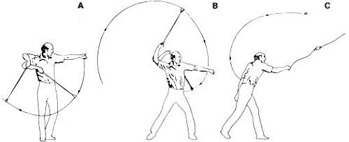

THE OVERHAND THROWING TECHNIQUE [A] The thrower drops the pocket and draws the missile back into a wide vertical orbit. [B] The throwing arm rises high, then swings down behind the slingers head to tighten the first orbit. At the same moment, the slinger begins a long ""pitcher's step."" [C] The thrower completes the forward step as the missile reaches the top of its second orbit ? and the knotted cord is released as the slinger's wrist snaps forward.